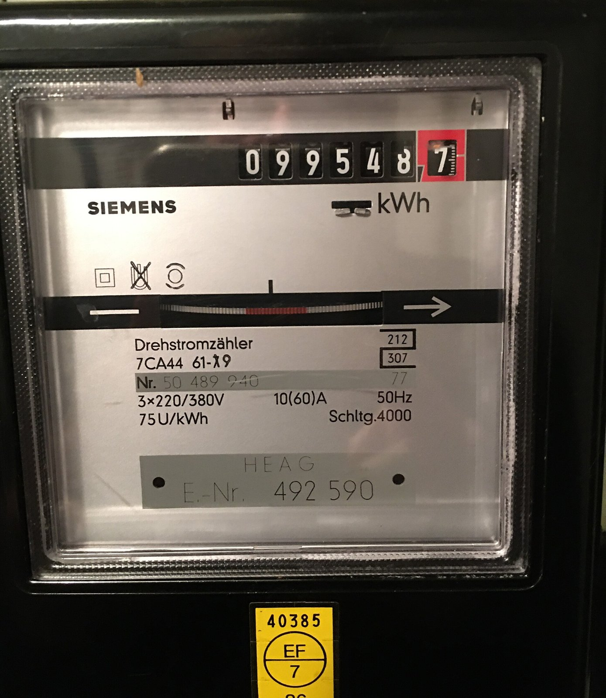
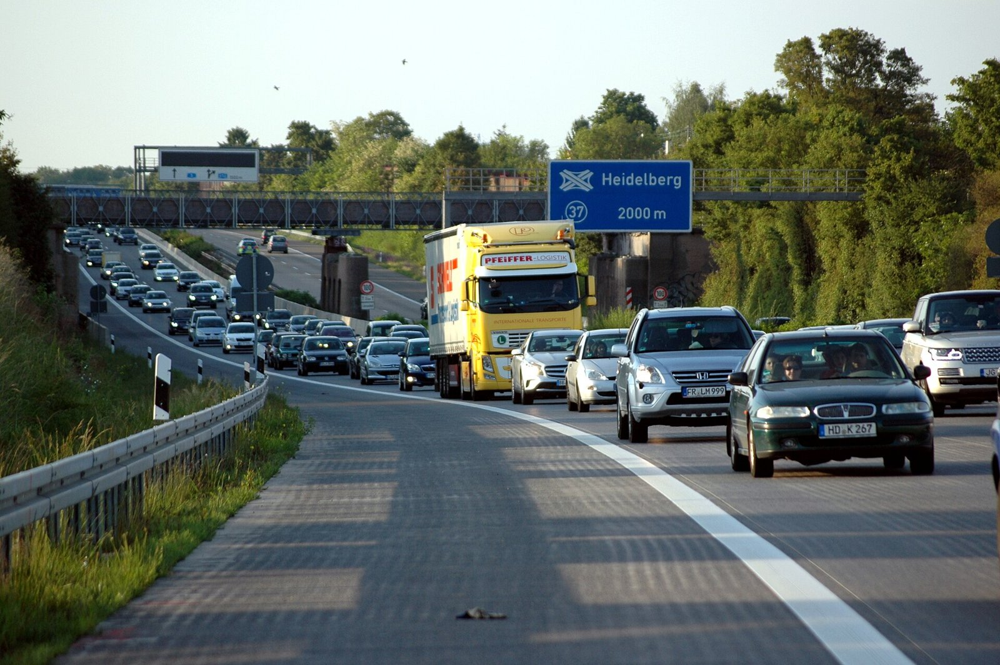
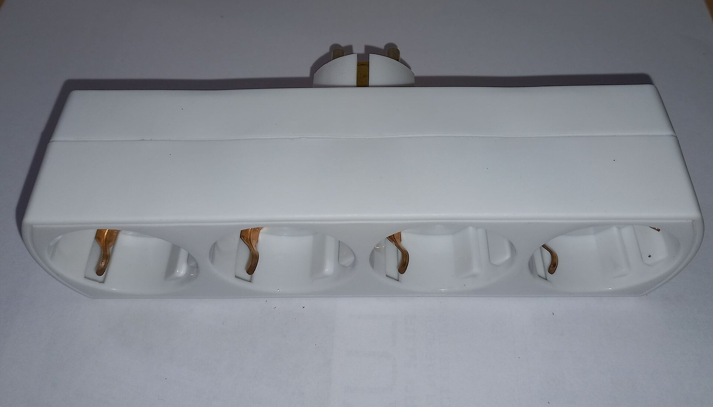

Nenne die Teilchen, die sich in einem Metalldraht bewegen, wenn Strom fließt.
Richtung
Beschreibe, in welche Richtung sich diese Teilchen im Stromkreis bewegen.
Leitung
Begründe, warum ein Föhn nicht in die Nähe der gefüllten Badewanne gehört.
⏱ 3 min — allein ins Heft
Einstieg · Vergleich
Die elektrische Stromstärke
Vergleiche
1) Frei bewegliche Elektronen.
2) Gerichtet vom Minuspol durch den Stromkreis zum Pluspol.
3) Badewasser leitet den Strom (gelöste Stoffe). Fällt der Föhn hinein, fließt Strom durch das Wasser und durch den Körper.
Motivation · Einstieg
Die elektrische Stromstärke
Der Stromzähler im Keller

So ein Zähler hängt in vielen Häusern im Keller.
Die Zahlen darauf werden jedes Jahr abgelesen, danach kommt die Stromrechnung.
Was misst dieser Zähler eigentlich – wird der Strom in den Lampen „verbraucht“?
Foto: Bicycle Tourer · CC BY-SA 4.0 · Wikimedia Commons
Motivation
Die elektrische Stromstärke
Frage der Stunde
Wird der Strom in der Lampe verbraucht — ist er hinter der Lampe kleiner als davor?
Schreib deine Vermutung ins Heft.
Kennst du das?
Ein Handy-Ladegerät zeigt „2 A“ auf dem Etikett.
Im Sicherungskasten steht „16 A“.
Auf der Autobahn: Wie viele Autos fahren pro Minute vorbei?
Erarbeitung · Bild
Die elektrische Stromstärke
Stau auf der A5

Dichter, stockender Verkehr auf der Autobahn A5 bei Heidelberg; hinten eine Brücke.
Auf der Straße stehen sehr viele Autos. Fahren deshalb auch viele Autos pro Minute unter der Brücke durch?
Auflösung
Nein – im Stau kommen trotz vieler Autos nur wenige pro Minute an der Brücke vorbei. Entscheidend ist, wie viele in einer bestimmten Zeit eine Stelle passieren. So ist es auch beim Strom: Stromstärke = Ladung, die pro Sekunde durch den Leiterquerschnitt fließt.
Verkehr: Wie viele Autos fahren in einer Minute unter der Brücke durch?
Strom: Wie viele Elektronen fließen in einer Sekunde durch den Draht?
Gemessen wird mit dem Strommesser — er wird in den Stromkreis eingebaut, also in Reihe.
Erarbeitung · Tafelbild · so steht es im Heft
Die elektrische Stromstärke
So steht es im Heft
Die elektrische StromstärkeDatum:
Stundenfrage: Wird der Strom in der Lampe verbraucht — ist er hinter der Lampe kleiner als davor?
Merksatz
Erarbeitung · Merksatz · so steht es im Heft
Die elektrische Stromstärke
So steht es im Heft
Die elektrische StromstärkeDatum:
Stundenfrage: Wird der Strom in der Lampe verbraucht — ist er hinter der Lampe kleiner als davor?
Merksatz
Die elektrische StromstärkeI gibt an, wie viele Elektronen in jeder Sekunde durch einen Leiter fließen. Sie wird in Ampere (A) gemessen, mit dem Strommesser. Der Strommesser wird in Reihe zum Gerät geschaltet.
Erarbeitung · Größe
Die elektrische Stromstärke
Neue Größe: elektrische Stromstärke
Das gibt sie an
Gibt an, wie viele Elektronen in jeder Sekunde durch einen Leiter fließen.
Formelzeichen
I
Einheit
Ampere, Zeichen A
Umrechnung
1 A = 1000 mA
Messgerät
Strommesser (Amperemeter), in Reihe geschaltet
So groß ist das
LED rund 20 mA · Fahrradlampe rund 0,5 A · Wasserkocher rund 10 A · Sicherung im Haus 16 A
Achtung: Der Strom wird nicht verbraucht: Vor und hinter der Lampe ist die Stromstärke gleich.
Experiment · Planung
Die elektrische Stromstärke
Forscherfrage
Wie groß ist die Stromstärke vor, zwischen und hinter zwei Lampen — und wie ist es, wenn sich der Stromkreis verzweigt?
Plant euren Versuch
An welchen Stellen baut ihr den Strommesser ein? Zeichnet sie in den Schaltplan.
Wie baut ihr ihn um, ohne den Rest zu verändern?
Welchen Messbereich stellt ihr zuerst ein?
Wie sieht eure Tabelle aus?
Sicherheit: Der Strommesser kommt nie allein an die Batterie — immer mit einer Lampe in Reihe. Verbinde nie die beiden Pole der Batterie direkt mit einem Kabel — das Kabel wird heiß.
Flachbatterie 4,5 V, zwei Lampen, Schalter, Vielfachmessgerät, 7 Kabel
Sicherheit
Strommesser nur in Reihe mit einer Lampe
Prüft euch selbst
Ist der Strommesser in Reihe eingebaut?
Steht der Messbereich auf dem größten Wert?
Habt ihr jede Stelle in die Tabelle eingetragen?
Habt ihr unverzweigt und verzweigt gemessen?
Experiment · Protokoll · Tafelbild
Die elektrische Stromstärke
Elektrische Stromstärke messen
Stundenfrage: Wie viel Strom fließt an dieser Stelle?
Die neue Größe
Strommesser richtig einbauen
SE: unverzweigter Stromkreis
SE: verzweigter Stromkreis
Experiment · Protokoll · Tafelbild
Die elektrische Stromstärke
Die neue Größe
mündlichnur besprechen
1 A = 1000 mA
1 mA = 0,001 A
Formelzeichen
Einheit
Messgerät
I
Ampere (A)
Strommesser
Klick auf eine Lücke deckt sie auf.
Experiment · Protokoll · Tafelbild
Die elektrische Stromstärke
Strommesser richtig einbauen
mündlich
Der ganze Strom muss durch ihn.
Leitung auftrennen, Gerät dazwischen.
Falsch angeschlossen: Kurzschluss — direkt an der Quelle fließt ein sehr großer Strom.
Deshalb erst aufbauen, dann einschalten.
Klick auf eine Lücke deckt sie auf.
Experiment · Protokoll · Tafelbild
Die elektrische Stromstärke
SE: unverzweigter Stromkreis
aus dem Versuch
Messstelle
I in mA
1
120
2
120
3
120
Klick auf eine Lücke deckt sie auf.
Experiment · Protokoll · Tafelbild
Die elektrische Stromstärke
SE: verzweigter Stromkreis
aus dem Versuchnur besprechen
Vermutung: Unverzweigt überall gleich.
Verzweigt ergeben die Zweige zusammen den Wert vor der Verzweigung.
Messstelle
I in mA
1
250
2
150
3
100
4
250
Klick auf eine Lücke deckt sie auf.
Auswertung
Die elektrische Stromstärke
Was habt ihr gemessen?
unverzweigt: überall derselbe Wert
verzweigt: Die Zweige teilen sich den Strom der Hauptleitung
Auswertung · Tafelbild · so steht es im Heft
Die elektrische Stromstärke
So steht es im Heft
Elektrische Stromstärke messenDatum:
Stundenfrage: Wie viel Strom fließt an dieser Stelle?
Strommesser richtig einbauen
Der ganze Strom muss durch ihn.
Leitung auftrennen, Gerät dazwischen.
Falsch angeschlossen: Kurzschluss — direkt an der Quelle fließt ein sehr großer Strom.
SE: unverzweigter Stromkreis
Messstelle
I in mA
1
120
2
120
3
120
Merksatz
Auswertung · Merksatz · so steht es im Heft
Die elektrische Stromstärke
So steht es im Heft
Elektrische Stromstärke messenDatum:
Stundenfrage: Wie viel Strom fließt an dieser Stelle?
Strommesser richtig einbauen
Der ganze Strom muss durch ihn.
Leitung auftrennen, Gerät dazwischen.
Falsch angeschlossen: Kurzschluss — direkt an der Quelle fließt ein sehr großer Strom.
SE: unverzweigter Stromkreis
Messstelle
I in mA
1
120
2
120
3
120
Merksatz
Im unverzweigten Stromkreis ist die Stromstärke an jeder Stelle gleich — der Strom wird in der Lampe nicht verbraucht. Im verzweigten Stromkreis teilt sich der Strom auf die Zweige auf und fließt danach wieder zusammen.
Abschlussübung · falls Zeit
Die elektrische Stromstärke
Übungsaufgaben
Strommesser ablesen
Ein Strommesser zeigt 250 mA. Gib die Stromstärke in Ampere an.
Abschlussübung · Lösung
Die elektrische Stromstärke
Lösungen
Strommesser ablesen
250 mA = 0,25 A
Check-out
Die elektrische Stromstärke
Check-out
Erkläre, wie man einen Strommesser einbaut — und warum es egal ist, an welcher Stelle eines unverzweigten Stromkreises er sitzt.
Fachleute warnen: Hängen Waschmaschine, Trockner und Spülmaschine an derselben Steckdosenleiste, kann der Stecker stark heiß werden – bis zum Wohnungsbrand.
Riecht es verschmort oder ist der Stecker ungewöhnlich warm, ist die Leiste womöglich überlastet.
Warum wird das Kabel der Steckdosenleiste heiß, wenn viele Geräte gleichzeitig laufen?
Diskussion
Gesetze der Stromstärke und der Haushalt
Frage der Stunde — was meint ihr?
Warum fliegt die Sicherung raus, wenn Wasserkocher, Toaster und Föhn an einer Steckdosenleiste laufen?
Überlegt zu zweit: Was vermutet ihr — und warum?
Schreib deine Vermutung ins Heft.
⏱ 3 min — zu zweit, dann in der Klasse
Erarbeitung · Bild
Gesetze der Stromstärke und der Haushalt
Vier Geräte an einer Steckdose

Eine Mehrfachsteckdose mit vier Steckplätzen und einem Stecker.
Steckt man den Föhn aus, läuft das Radio daneben trotzdem weiter. Wie müssen die vier Steckplätze innen verbunden sein?
Auflösung
Parallel: Jeder Steckplatz ist direkt mit beiden Leitern verbunden, jedes Gerät hat seinen eigenen Stromkreis und die volle Spannung. Darum kann man Geräte einzeln aus- und einstecken.
Foto: Asurnipal · CC BY-SA 4.0 · Wikimedia Commons
Erarbeitung
Gesetze der Stromstärke und der Haushalt
Die Messwerte als Gesetz
unverzweigt: 0,2 A = 0,2 A
verzweigt: 0,5 A = 0,3 A + 0,2 A
Erarbeitung
Gesetze der Stromstärke und der Haushalt
Der Stromkreis im Haushalt
Alle Geräte sind parallel geschaltet — jedes lässt sich allein schalten.
In der Zuleitung addieren sich die Stromstärken aller Geräte.
Die Sicherung unterbricht, wenn es zu viel wird — meist bei 16 A.
Deshalb gibt es mehrere Stromkreise mit eigener Sicherung.
Erarbeitung · Tafelbild
Gesetze der Stromstärke und der Haushalt
Gesetze der Stromstärke
Stundenfrage: Warum fliegt die Sicherung raus, wenn Wasserkocher, Toaster und Föhn an einer Steckdosenleiste laufen?
Unverzweigt gemessen
Verzweigt gemessen
Gesetze der Stromstärke
Der Stromkreis im Haushalt
Erarbeitung · Tafelbild
Gesetze der Stromstärke und der Haushalt
Unverzweigt gemessen
aus dem Versuch
0,2 A = 0,2 A
Die Stromstärke ist überall gleich.
Klick auf eine Lücke deckt sie auf.
Erarbeitung · Tafelbild
Gesetze der Stromstärke und der Haushalt
Verzweigt gemessen
aus dem Versuch
0,5 A = 0,3 A + 0,2 A
Hauptleitung = Summe der Zweige
Klick auf eine Lücke deckt sie auf.
Erarbeitung · Tafelbild
Gesetze der Stromstärke und der Haushalt
Gesetze der Stromstärke
mündlichnur besprechen
unverzweigt
verzweigt
Stromstärke
überall gleich
Summe der Zweige
Gleichung
I = I1 = I2
Iges = I1 + I2
Klick auf eine Lücke deckt sie auf.
Erarbeitung · Tafelbild
Gesetze der Stromstärke und der Haushalt
Der Stromkreis im Haushalt
mündlichnur besprechen
Alle Geräte sind parallel geschaltet.
In der Zuleitung addieren sich ihre Stromstärken.
Die Sicherung unterbricht, wenn es zu viel wird — meist bei 16 A.
Beispiel: 9 A + 4 A + 8 A = 21 A — die Sicherung löst aus.
Deshalb gibt es mehrere Stromkreise mit eigener Sicherung.
Klick auf eine Lücke deckt sie auf.
Notieren · Tafelbild · so steht es im Heft (1/2)
Gesetze der Stromstärke und der Haushalt
So steht es im Heft (1/2)
Gesetze der StromstärkeDatum:
Stundenfrage: Warum fliegt die Sicherung raus, wenn Wasserkocher, Toaster und Föhn an einer Steckdosenleiste laufen?
Unverzweigt gemessen
0,2 A = 0,2 A
Die Stromstärke ist überall gleich.
Verzweigt gemessen
0,5 A = 0,3 A + 0,2 A
Hauptleitung = Summe der Zweige
Notieren · Tafelbild · so steht es im Heft (2/2)
Gesetze der Stromstärke und der Haushalt
So steht es im Heft (2/2)
Gesetze der Stromstärke (Fortsetzung)
Merksatz
Merksatz
Notieren · Merksatz · so steht es im Heft (2/2)
Gesetze der Stromstärke und der Haushalt
So steht es im Heft (2/2)
Gesetze der Stromstärke (Fortsetzung)
Merksatz
Gesetze der Stromstärke. Im unverzweigten Stromkreis ist die Stromstärke überall gleich: I = I1 = I2. Im verzweigten Stromkreis ist die Stromstärke in der Hauptleitung gleich der Summe der Stromstärken in den Zweigen: Iges = I1 + I2.
Merksatz
Im Haushalt sind die Geräte parallel geschaltet. Ihre Stromstärken addieren sich in der Zuleitung. Die Sicherung unterbricht den Stromkreis, bevor die Leitung zu heiß wird.
Hilfe · Rechenaufgaben
Gesetze der Stromstärke und der Haushalt
So löst du eine Rechenaufgabe
Gegeben — alle Werte mit Formelzeichen und Einheit — gleich in die passende Einheit umrechnen (g → kg, cm → m)
Gesucht — das Formelzeichen der gesuchten Größe
Formel — aus dem Merksatz oder dem Formeldreieck ablesen
Einsetzen — Zahl und Einheit einsetzen
Einheit — mit den Einheiten rechnen — so weißt du vorher, welche Einheit herauskommt
Probe — mit dem Ergebnis rückwärts rechnen — kommt der gegebene Wert heraus?
Plausibel? — mit einer Größenvorstellung vergleichen — kann das stimmen?
Antwort — ein ganzer Satz
Hilfe · Musteraufgabe
Gesetze der Stromstärke und der Haushalt
Stromstärke im Zweig
In der Hauptleitung fließen 1,2 A, im ersten Zweig 700 mA. Bestimme die Stromstärke im zweiten Zweig.
Gegeben
Iges = 1,2 A I1 = 700 mA = 0,7 A
Gesucht
I2
Formel
Iges = I1 + I2
Einsetzen
1,2 A = 0,7 A + I2
Einheit
A + A = A
Ergebnis
I2 = 0,5 A (denn 0,7 + 0,5 = 1,2)
Hilfe · Musteraufgabe
Gesetze der Stromstärke und der Haushalt
Stimmt das? Stromstärke im Zweig
Ergebnis:I2 = 0,5 A (denn 0,7 + 0,5 = 1,2)
Gegenprobe: rückwärts rechnen
0,7 A + 0,5 A = 1,2 A ✓
Plausibel? Im Zweig fließt weniger als in der Hauptleitung — passt.
Antwort: Im zweiten Zweig fließen 0,5 A.
Übung · schriftlich
Gesetze der Stromstärke und der Haushalt
Übung — schriftlich ins Heft
Steckdosenleiste
Wasserkocher (9 A), Toaster (4 A) und Föhn (8 A) laufen an einer Steckdosenleiste. Berechne die Stromstärke in der Zuleitung und begründe, ob die 16-A-Sicherung auslöst.